医学评测
通过 CMB、MedBench、HealthBench、DoctorBench、MedXpertQA 等医学评测了解模型的任务表现；具体版本与结果以公开发布记录为准。
通过 CMB、MedBench、HealthBench、DoctorBench、MedXpertQA 等医学评测了解模型的任务表现；具体版本与结果以公开发布记录为准。
WiseClaw 支持智能体构建、流程编排与安全治理，帮助团队将模型能力组织为可配置的业务工作流。
围绕健康咨询、报告辅助解读、患者服务与检后管理，提供信息整理和服务流程支持。
面向医疗机构及健康产业伙伴，结合业务需求评估产品能力、系统集成与部署方式。
自研医学多模态大模型，结合医学知识理解、临床逻辑推理与安全评审机制，为预问诊信息整理、报告辅助解读等场景提供可调用的 AI 能力，支持专业人员复核与业务系统集成。
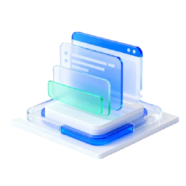
结合医学语义理解与推理能力，支持多模态医学资料解析，为专业人员提供信息整理与分析参考。
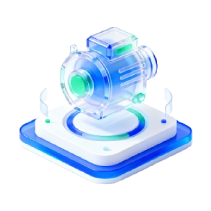
支持配置医生 AI 助手，辅助采集问诊信息、解读报告与整理咨询内容，供医疗服务团队复核使用。
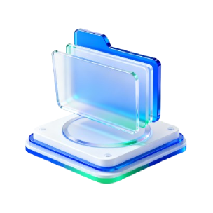
支持识别医学实体与健康咨询意图，关联药品、检查项目等知识信息，供专业人员检索与核对。
结合长期记忆能力，支持整理用户提供的健康信息、更新档案并查看指标变化。
结合健康档案与服务规则，支持配置复查、用药记录和生活管理提醒，衔接后续服务。
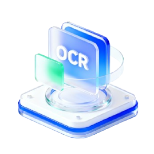
面向健康医疗材料的 OCR 识别能力，支持提取病历、处方、票据与药盒文字，辅助数据结构化处理。
从日常健康提问，到家庭健康档案整理。好伴 AI 支持报告辅助解读、健康记录与后续追问，帮助家人梳理信息，为与专业人员沟通做好准备。
支持日常健康信息问答，并可结合上下文继续追问。
支持建档与资料整理，方便管理家庭成员的健康记录。
结合已记录的健康信息与偏好，为后续对话提供上下文。
汇总历年体检报告，辅助比较指标变化与整理关注事项。
辅助整理健康问题与相关资料，方便后续咨询和沟通。
通过适用的产品端查看健康信息，衔接日常咨询与记录。
以 WiseDiag 医学大模型提供模型能力，以智多星作为医学智能底座，连接智小伴、智小医、智小检、智小药、智小康，配合 WiseClaw 智能体平台，支持从场景验证到持续运营。
面向机构的医学智能底座，连接模型、知识证据、数据治理与智能编排。
连续健康陪伴与个性化服务，连接用户与服务流程。
为医生与医疗服务团队提供可协作的智能服务能力。
面向检验检测与报告服务场景的资料理解与衔接。
面向药企的专业内容与学术服务智能化升级。
面向企业员工健康福利，支持员工健康档案、群体洞察与福利运营。
面向药企、IVD 与互联网医院等行业，把专业资料、服务边界与业务流程组织起来，先跑通一个真实场景，再进入规模化协同。
支持学术资料整理、专业内容管理与患者服务流程协同，衔接药企学术推广与服务运营。
了解方案 →检测报告智能解读、检后服务联动与长期健康管理，让检测价值延伸到报告之外。
了解方案 →在线问诊、分诊导诊、患者教育与随访运营，构建线上专业服务闭环。
了解方案 →成都福瑞互联网医院
互联网医院围绕肝病健康服务，支持健康咨询信息整理、随访提醒与患者服务衔接，辅助团队开展日常管理。
中特生命健康集团
泛健康通过 AI 智能体辅助营养咨询与产品答疑，支持常见问题整理和服务内容管理，衔接用户服务流程。
申纪元（上海）健康科技
泛健康围绕健康服务需求，支持体检报告辅助解读、健康档案管理与咨询信息整理，协助团队搭建服务流程。
陕西省健康体检服务协会
政府 / 协会面向体检服务场景，围绕报告辅助解读、检后服务与机构协同开展方案交流。
面向医疗机构、药企与健康科技伙伴，围绕实际业务需求探索医疗 AI 的集成与应用。
生态与企业伙伴
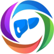
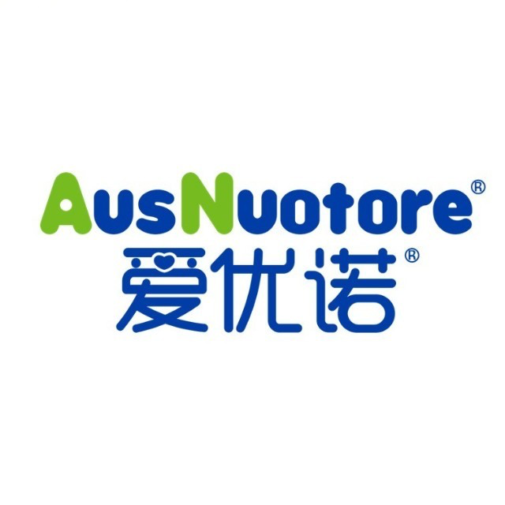
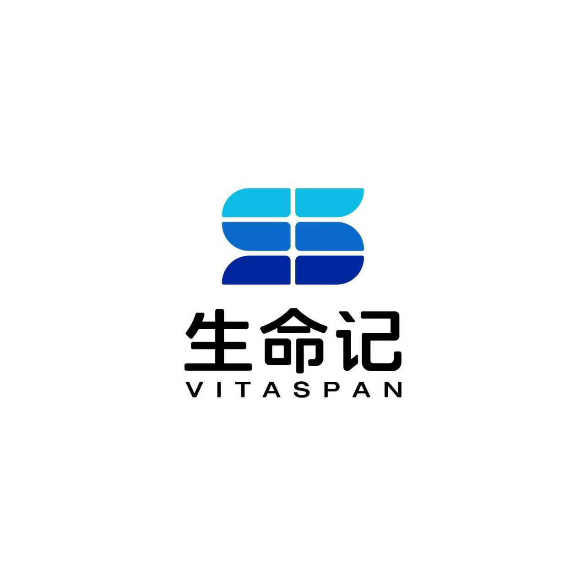
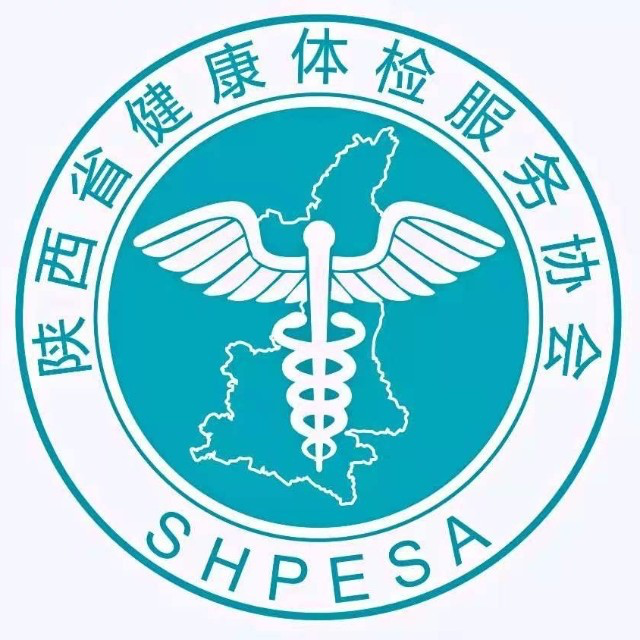
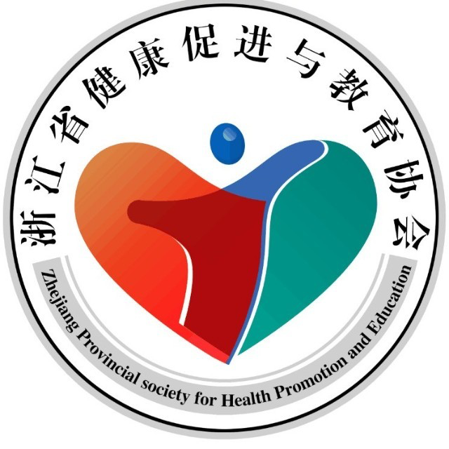
合作医院
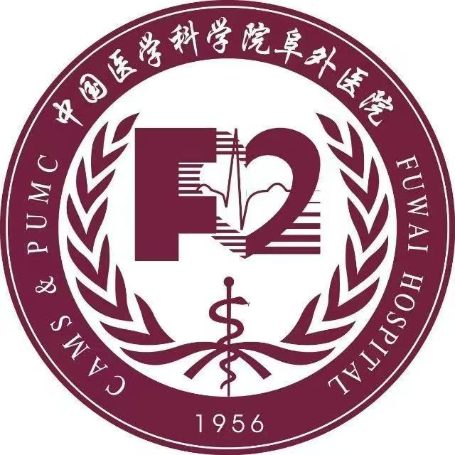
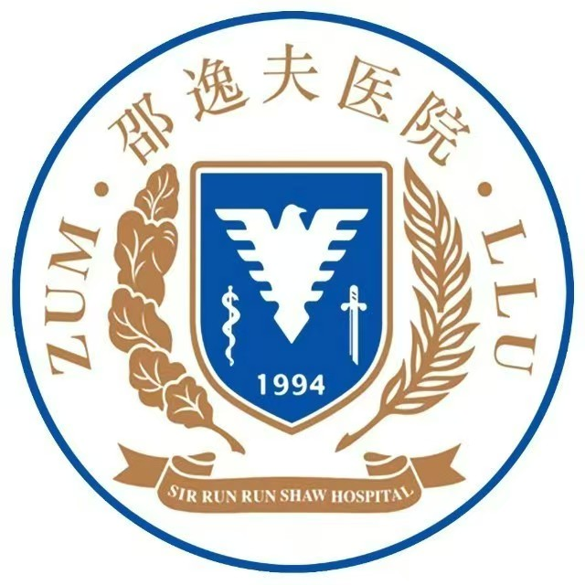
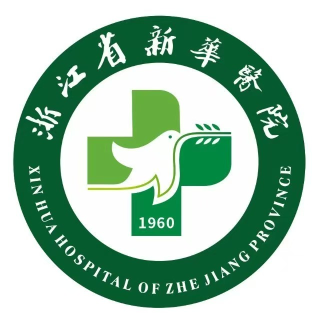
提交需求后，我们将安排顾问与您联系，围绕场景梳理、能力匹配与接入方式进一步沟通。